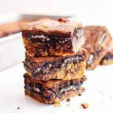

Slutty Brownies

Description
If you haven't heard of Slutty Brownes by now, then
you are completely missing out. Truly I have no idea why
they are called that name. It's hilarious but that's what
everyone knows them by. This easy layered dessert is absolutely
delicious because it combines all the best things: cookie dough,
Oreo cookies and brownies. These have been one of my favorite
bars for a long while now and we can't stop making them. So if
you are looking for that perfectly easy dessert recipe to whip
up or to bring to a gathering, you have to try this Slutty
Brownie recipe!
Ingredients
- brownie mix
- eggs
- vegetable oil
- water
- chocolate chip cookie dough
- oreo cookies
Recipe Instructions
- Preheat the over to 350 degrees and add the brownie mix, eggs, vegetable oil, and water together in a bowl.
- Mix the brownie mixture together and set aside.
- Press the cookie dough into a pan in an even layer (either line pan with parchment or use a non-stick spray.
- Next, layer the Oreo Cookies and cut some down in size to fit.
- Pour the brownie batter over the Oreos and spread evenly.
- Bake for 35-45 minutes or until a toothpick comes out clean when inserted into the center.
- Remove the pan from oven and let it cool before serving. Enjoy your Slutty Brownies!